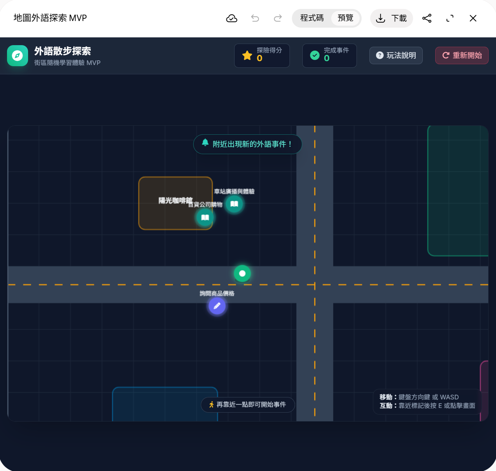
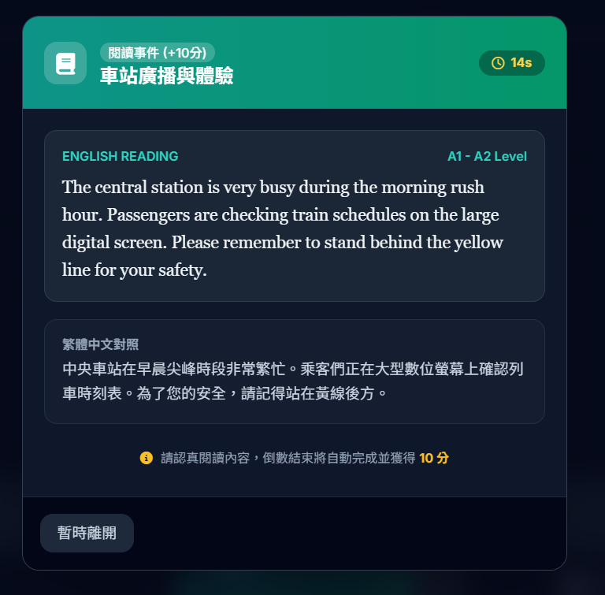
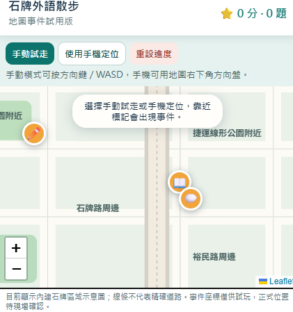

2026-10-11
用Canvas先搞個雛形，大概看得懂就好了，有考慮把這玩頁拿來做團專，因為我一個人搞這規模可能會搞不定，但還是看其他人的想法…


目前專案處於概念驗證與開發規劃階段，尚未開始正式開發。
- 已有概念原型：Gemini Canvas 製作的模擬地圖版本，包含角色移動、隨機事件、閱讀／填空／情境選擇題，以及完成獎勵與累積分數。已閱讀原始碼，尚未實際測試驗收。
- 已討論技術方向：可先做手機網頁；使用 Google Maps 顯示地圖，搭配自有地標資料與預先生成的 AI 題庫，減少即時查詢與出題成本。
- 已整理開發規劃：涵蓋真實定位、地標綁定、事件刷新、AI 題庫、進度保存及戶外測試。
- 尚待決定：首發測試區域、候選地標、第一版平台、學習程度與預算。
- 尚未實作：Google Maps／GPS 接入、地標資料庫、AI 出題串接、後端與正式部署。
下一步預計：先確定一個測試區域，篩選 8～12 個地標，再定案第一版規格。
2026-10-13
先讓GPT幫忙隨便挑個我有可能會經過的範圍，讓我有空能到現地看下效果，原本AI想把地點跟事件先決定，但我還是比較想先看到實際呈現的效果，所以調整的開發排程，地點跟事件決定的工量很大，我覺得短時間內比較難收尾。
